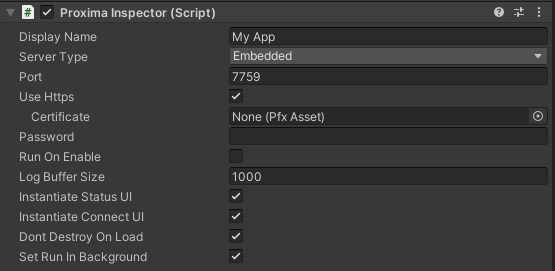
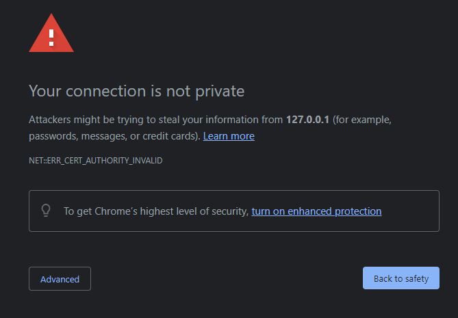
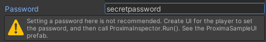

Security Considerations
Proxima Inspector is a powerful tool that can be used to control and debug your game. It is important to understand the security implications when using Proxima Inspector. Potentially any information in your game can be read with Proxima, or by anyone eavesdropping on your connection if encryption is not enabled.
To protect your game from unwanted access, follow the guidelines on this page.
Secure Configuration
At a glance, this is what the most secure configuration of Proxima looks like:
Notice that:
- Use Https is checked.
- No password is specified.
- Run On Enable is disabled.
- Instantiate Connect UI is enabled.
The rest of this page will go over each of these options.
Use Https
HTTPS is a protocol for secure communication over a network. It is used to encrypt data sent between your game and Proxima Inspector.
Enabling HTTPS is easy. Simply check the Use HTTPS box on the Proxima Inspector component. You may also need to add a new rule to your firewall to allow HTTPS traffic on your configured port.
(Optional) TLS Certificate
HTTPS requires a TLS certificate to encrypt data. Proxima Inspector uses a self-signed certificate by default, which is not trusted by most browsers. The first time you try to access Proxima Inspector, you may see a warning like this that the certificate is not trusted.
This is normal, and you can safely bypass the warning by clicking "Advanced -> Proceed". Your browser is warning you that it cannot validate the identity of the server, but if you are connecting directly to your device by IP address, then you can be sure that you are connecting to the correct server.
If you want to use your own certificate, import the PFX file and assign it to the Certificate property of the Proxima Inspector component.
Password Security
Proxima Inspector uses a password to authenticate your connection. If you type a password into the Proxima Inspector component, you will see this warning:
Unity assets, including your Proxima Inspector configuration are not secured and can be data mined by players easily. Instead of entering a password, it is recommended to have a user interface in which the player can create a password for Proxima to use at runtime. Alternatively, you can design an interface to display a random password on the screen.
The Proxima package includes a Connect UI prefab that you can use. To use it:
- Check Instantiate Connect UI.
- Clear the Password field.
- Uncheck Run on Enable. This will prevent Proxima from trying to start automatically.
- Run the game and press Proxima logo on the bottom-right to show and hide the Connect UI.
© 2023 Virtual Maker Corporation